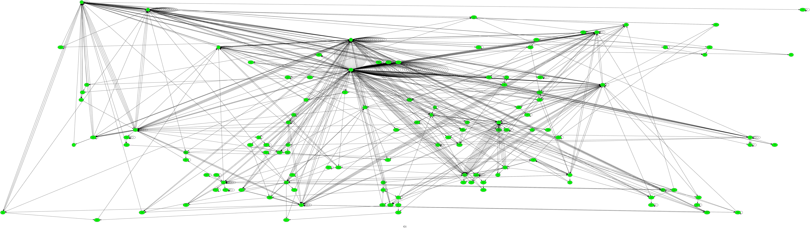
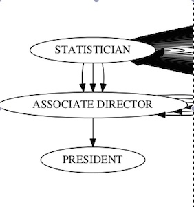

Toggle navigation
Career Path Analysis
Home
About
Contact
Career path
A tool for analyzing career paths from public Linkedin profiles.
Enter your current position:
show career flow network
-->
STATISTICIAN
SENIOR STATISTICIAN
SAS PROGRAMMER
DIRECTOR
TBD
Submit
networks go here.

Enter your desired job:
show path suggestions
Paths go here.
